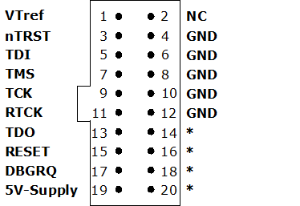

Interfaces: the connection from the target to the real world
When working with embedded devices, the focus is always on the application: write your code, press some magic button in a GUI, and see how it magically starts executing in the target.
The process of flashing and debugging the code is different for each chip vendor. In this section, we will try to shed light on the matter in order to avoid depending on vendor-locked solutions.
The following table is a comparison of commercially available debuggers1, pointing their price and the targets they work on:
| Debugger | Price2 [U$D] | Comments |
|---|---|---|
| J-Link | $450 | Works with almost any device. |
| Lauterbatch TRACE32 | $5000 | Expensive, vendor-specific. |
| JTAG Live | $5000 | Expensive, vendor-specific. |
| ST-LINK/V3 | $35 | Only works for STM chips. |
| Black Magic Probe | $75 | x |
| FTDI based module | $30 | Compatible with OpenOCD, configurable. |
| CP21XX based module | $40 | Only works for USB-to-UART. |
My two cents is that debuggers are expensive because of ignorance. People pay for what they don't know.
The following sections give a brief introduction to each debugger, but the focus is in the FTDI debuggers.
FTDI based probes
TODO
Black Magic Probe
The Black Magic Probe (BMP) goes for just $75 bucks. However, it
ST-LINK
SEGGER J-Link
Check: https://www.segger.com/products/debug-probes/j-link/models/other-j-links/st-link-on-board/
The old J-Link we all know and love. The J-Link BASE and the J-Link PLUS are the exact same hardware, the only difference being than the PLUS comes with extra software licenses, Ozone, the GUI debugger.
The BASE only gives you access to the J-Link Commander, a CLI tool that can only be used for flashing programs and debugging.
The hardware goes at $450, while the [Ozone software][ozone] has a free license for students and non commercial use, but for commercial goes at $1000.
With JLink Commander, you can:
- Connect to the target MCU via JTAG or SWD.
- Ran and write memory addresses.
- Load and program flash (.elf, .bin, .hex).
- Control execution with debugging instructions.
- Reset target.
- Get device information (detect core, flash size, etc).
- SWO/UART logging
JLink.exe -CommanderScript flash.jlink
For example, this jlink script programs the STM32F401:
; Specify device and SWD interface speed
device STM32F401RE
if SWD
speed 4000
; Reset, halt and erase flash
r
h
erase
; Load binary into memory address
loadbin firmware.bin, 0x08000000
verifybin firmware.bin, 0x08000000
; Reset and run
r
go
exit
JLINK is primarly a flasher / debugger with a JTAG interface. For boundary-scan, you need to use external tools that talk to JLink.
The JTAG interface only specifies 5 pins, but the JLink device has a pinout of 20. Most of them are boilerplate GND and extra signals that aren't really needed.

Lauterbach and JTAG Technologies
All these companies are really expensive. They are meant to be used for companies only, since the real value comes from the proprietary software and customer support.
Basically, by buying an using these products you are paying their engineers to solve your problems. You don't get any real experience or knowledge besides on how to use their products, since they purposefully abstract everything to make you reliant on their solutions.
I can only think of one specific use case for these devices, and that is if you absolutely a very high speed debugging interface with a large memory to store trace information.